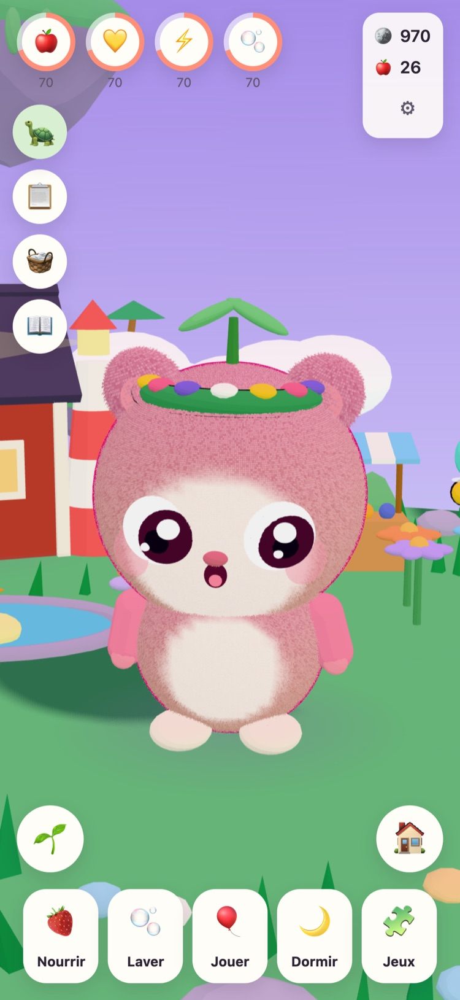
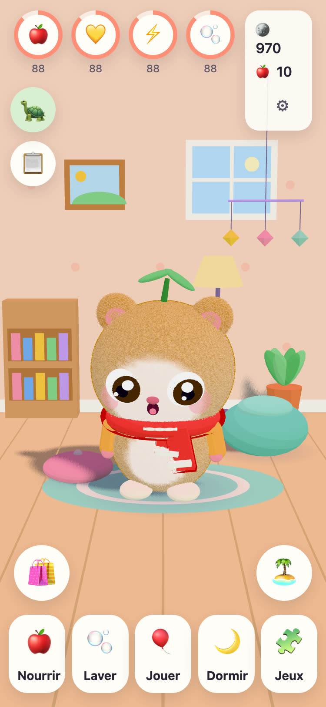
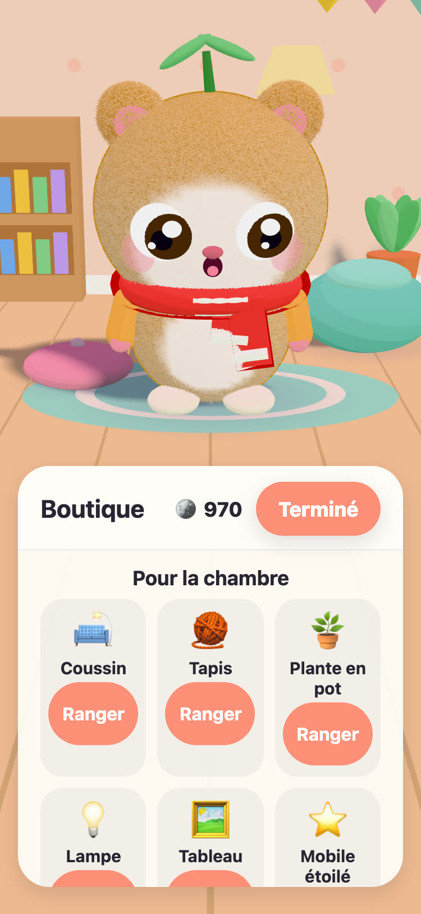
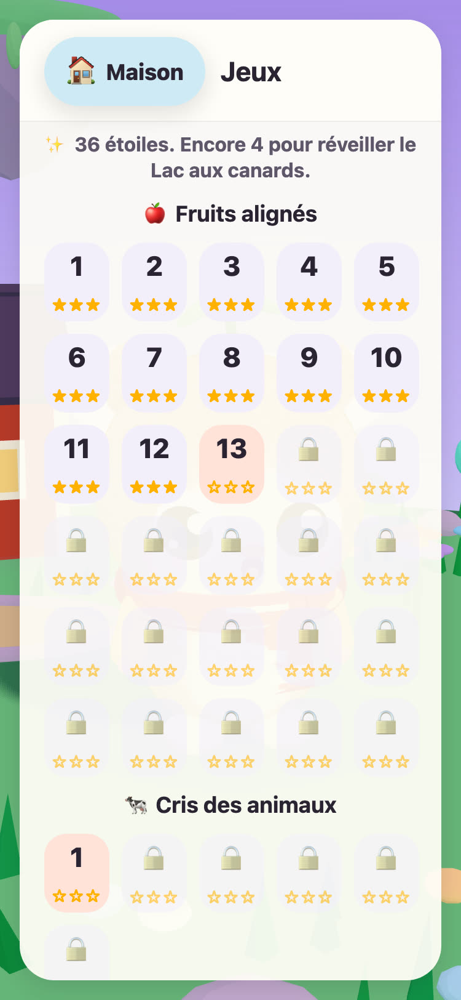

JUNOLittle Worlds
Faites éclore un Juno, prenez soin de lui et résolvez de doux casse-tête qui réveillent une île flottante. Un jeu calme pour les enfants de 6 à 10 ans, sur iPhone et iPad.
Bonjour ! J'ai trouvé trois œufs tout chauds. Lequel est le tien ?
- Sans publicité
- Sans pistage
- Sans compte
- Ni minuteur ni pression




Un petit compagnon rien qu'à lui
Papi Tintin, la vieille tortue qui veille sur l'Île des Prés, a trouvé trois œufs tout chauds. Votre enfant en choisit un et donne un nom à ce qui en sort. Dès lors, le Juno est à lui : il le nourrit, le lave, joue avec lui et le met à la sieste.
-
Choisir un œuf
Trois œufs tout chauds, trois couleurs. Votre enfant en choisit un et le regarde éclore.
-
Lui donner un nom, l'aimer
Manger, se laver, jouer et faire la sieste. Le Juno montre ce qu'il ressent et grandit à mesure que leur amitié grandit.
-
Réveiller l'île
Chaque étoile gagnée dans un casse-tête ramène la lumière sur l'Île des Prés, jusqu'au retour des fleurs, des abeilles et des canards.
Manger, se laver, jouer, dormir
Des aliments et des jouets variés, des bulles dans le bain, et un Juno qui montre ce qu'il ressent. Les besoins baissent lentement et jamais jusqu'à zéro : un Juno n'est jamais perdu.
57 doux casse-tête
Fruits alignés, Jardin des paires, et Cris des animaux et Bruits des véhicules avec de vrais enregistrements. Les étoiles dépendent des coups, jamais du temps, et réessayer est toujours gratuit.
Une île qui se réveille
Le Jardin fleuri s'ouvre avec ses abeilles, le Lac aux canards se remplit d'eau et de canards, et les graines deviennent des pommes et des fraises dans les carrés du potager.
Une chambre à rendre douillette
Les pièces gagnées dans les casse-tête et les missions du jour achètent des décorations pour la chambre du Juno et des tenues à porter. Rien dans la boutique à pièces ne coûte de l'argent réel.
Lu à voix haute
Papi Tintin lit chaque phrase à voix haute, de sa propre voix chaleureuse, pour les enfants qui ne savent pas encore lire. Touchez-le pour l'entendre à nouveau.
Un Espace parents
Derrière un verrou parental : la langue, la lecture à voix haute, les sons, l'heure du coucher et un doux rappel de pause. À l'heure du coucher, le Juno dort et les casse-tête attendent le matin.
Parle 21 langues
Papi Tintin parle à votre enfant dans sa propre langue. Choisissez-la dans l'Espace parents, ou laissez le jeu suivre la langue de l'appareil.
English Svenska Dansk Norsk Suomi Deutsch Nederlands Français Español Italiano Português (Brasil) Polski Русский Ελληνικά Türkçe Bahasa Melayu Kiswahili हिन्दी 日本語 한국어 简体中文
Créé par un grand-père
JUNO a été créé en Suède par un grand-père pour sa petite-fille : un jeu auquel il serait heureux de la voir jouer. Papi Tintin, la tortue du jeu, c'est lui.
Les règles sont donc simples. Rien qui met la pression, rien qui trompe, et rien qui collecte quoi que ce soit sur votre enfant.
Gratuit, sans publicité
JUNO est gratuit à télécharger, sans publicité, sans pistage et sans compte. Tout ce que fait votre enfant reste sur votre appareil. Consultez la page sur la confidentialité.
Un adulte peut acheter JUNO Plus ou le Pack Hiver dans l'Espace parents, derrière le verrou parental. Ce sont deux achats uniques, que vous pouvez restaurer et partager avec votre famille.